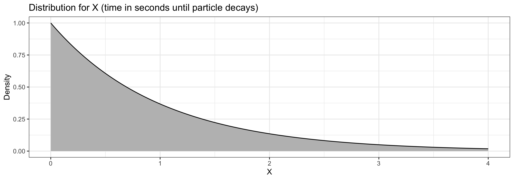

Random Variables III
Grayson White
Math 141
Week 10 | Fall 2025
Goals for Today
- Discuss continuous random variables
- Introduce the normal distribution
- Introduce the \(t\) distribution
Continuous Random Variables
The Distribution of a Continuous Variable
If \(X\) is a continuous random variable, it can take on any value in an interval.
- e.g., \(0\leq X\leq 10\) or \(-\infty < X < \infty\)
Recall: For discrete random variables, we could list the probability of each possible outcome.
- For continuous random variables, this won’t work. There are infinite outcomes!
Instead, we represent relative chances of different possible outcomes using a density function \(f(X)\)
- \(f(X) \geq 0\) for all possible \(X\)
- The total area under the function is \(1\)
- \(P(a\leq X\leq b)\) is the area under \(f\) between \(a\) and \(b\)
Density Curve
Suppose \(X\) is a random variable representing the time (in seconds) it takes for a particle to experience radioactive decay, where \[ f(x) = e^{-x} \qquad \textrm{for } x\geq 0 \]
- The probability that it takes between \(1\) and \(2\) seconds to decay is the area under the curve between \(1\) and \(2\). \(P(1 < T < 2) =\)
Density Curve
Suppose \(X\) is a random variable representing the time (in seconds) it takes for a particle to experience radioactive decay, where \[ f(x) = e^{-x} \qquad \textrm{for } x\geq 0 \]
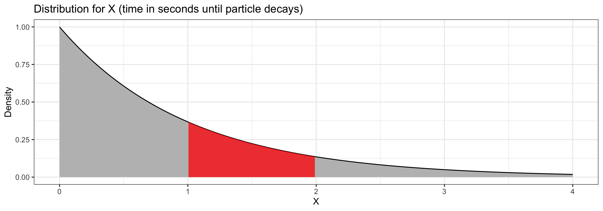
- The probability that it takes between \(1\) and \(2\) seconds to decay is the area under the curve between \(1\) and \(2\). \(P(1 < T < 2) = \color{red}{0.232}\)
Mean and Variance
Continuous variables have a mean, variance, and standard deviation too!
- We can’t use the same definition as for discrete random variables. \[E[X] = \sum_x xP[X=x]\]
- There are infinitely many values
- With infinitely many, each specific one has probability 0
Instead, we have to use calculus to define mean and variance: \[ \begin{align} E[X] &= \int x f(x) \, dx\\ \mathrm{Var}(X) &= \int (x - \mu)^2 f(x) \, dx \end{align} \]
Mean and Variance
\[ \begin{align} E[X] &= \int x f(x) \, dx\\ \mathrm{Var}(X) &= \int (x - \mu)^2 f(x) \, dx\\ \mathrm{SD}(X) &=\sqrt{\mathrm{Var}(X)} \end{align} \]
- These integrals are tools to meaningfully average infinitely many values
- (We won’t compute any integrals in this class!)
As always…
- the mean of a random variable represents a typical value.
- the standard deviation represents the typical size of deviations from the mean.
The Normal Distribution
The Normal Distribution
The Normal distribution is defined by two parameters:
- Mean, \(\mu\)
- Standard deviation, \(\sigma\)
Suppose \(X\) follows a Normal(\(\mu\),\(\sigma\)) distribution. The density function is \[f(x) = \frac{1}{\sqrt{2 \pi \sigma^2}} \cdot\exp \left(\frac{-(x-\mu)^2}{2\sigma^2}\right) \qquad \quad \textrm{Don't memorize this!}\]
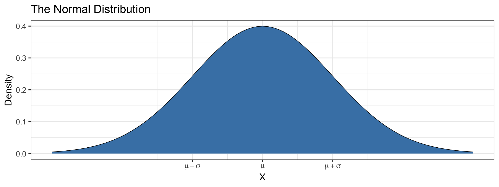
Calculating Probabilities
R has built-in functions for calculating probabilities from a normal distribution.
Suppose \(X\sim \text{Normal}(\mu=75, sd=5)\). Then:
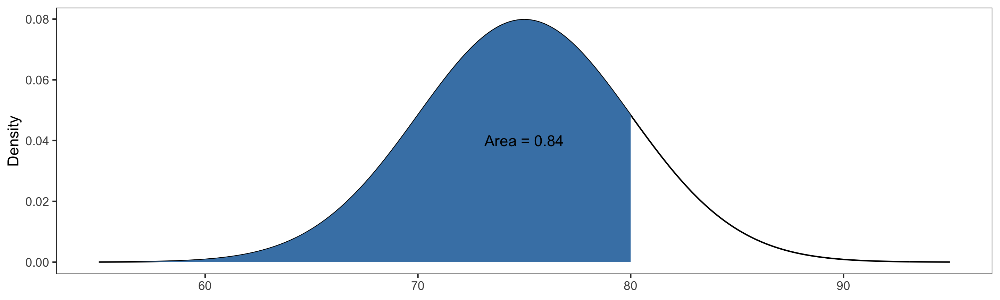
Calculating Probabilities
R has built-in functions for calculating probabilities from a normal distribution.
Suppose \(X\sim \text{Normal}(\mu=75, sd=5)\). Then:
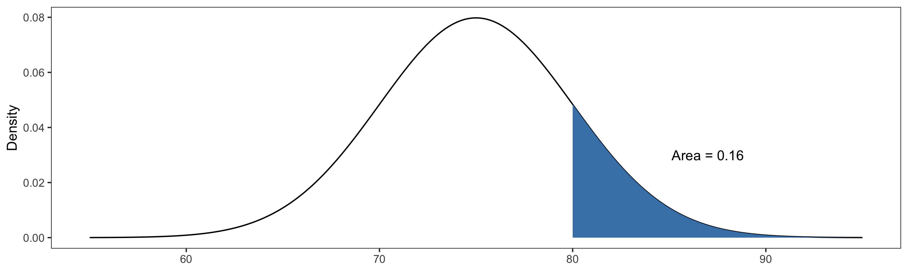
Calculating Probabilities
R has built-in functions for calculating probabilities from a normal distribution.
Suppose \(X\sim \text{Normal}(\mu=75, sd=5)\). Then:
- \(P(70 \leq X \leq 80) = P(X\leq 80) - P(X\leq 70) =\)
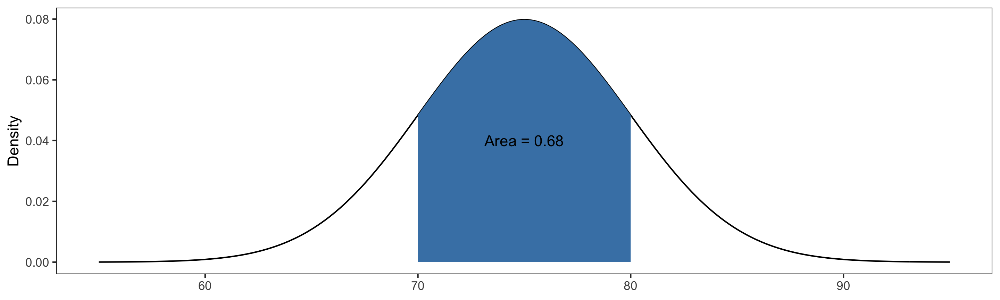
Finding Quantiles
We can also use R to find quantiles of a Normal distribution.
Suppose \(X\sim \text{Normal}(\mu=75, sd=5)\). Then:
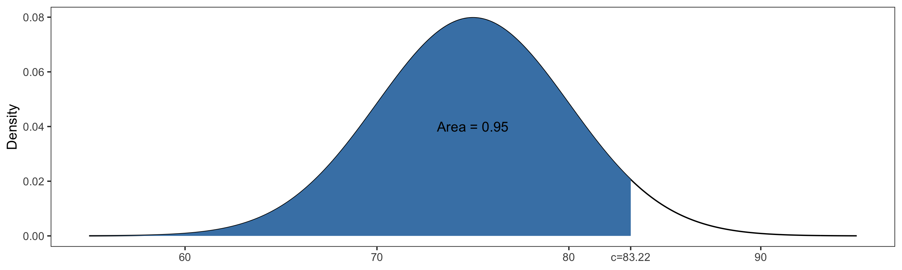
Scale and Translation Invariance
Suppose \(X\sim\text{Normal}(\mu=0,\sigma=1)\) and \(Y\sim\text{Normal}(\mu=2,\sigma=0.25)\).
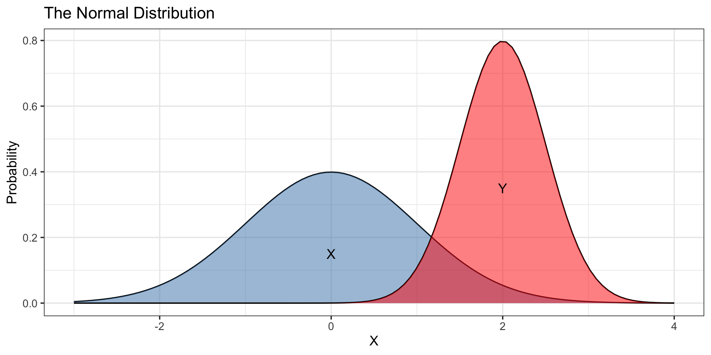
\(X\) and \(Y\) have different means, heights, and widths…
- But the same shapes!!
Scale and Translation Invariance
Suppose \(X\sim\text{Normal}(\mu=0,\sigma=1)\) and \(Y\sim\text{Normal}(\mu=2,\sigma=0.25)\).
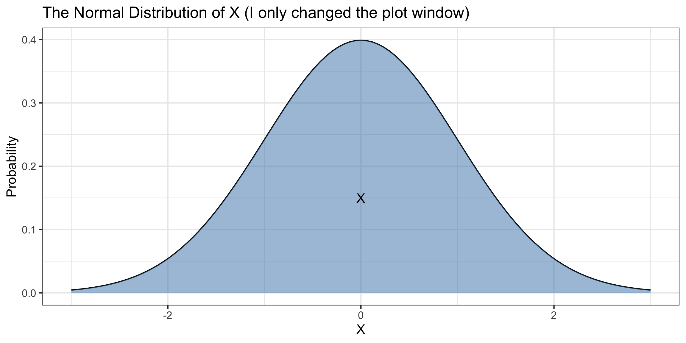
\(X\) and \(Y\) have different means, heights, and widths…
- But the same shapes!!
Scale and Translation Invariance
Suppose \(X\sim\text{Normal}(\mu=0,\sigma=1)\) and \(Y\sim\text{Normal}(\mu=2,\sigma=0.25)\).
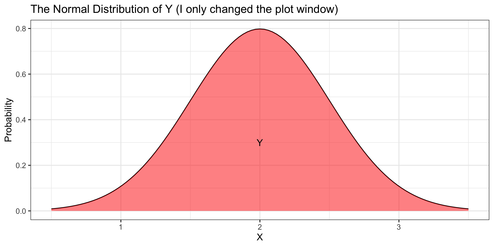
\(X\) and \(Y\) have different means, heights, and widths…
- But the same shapes!!
Standardization
Theorem: Standardization
Suppose \(X\sim\text{Normal}(\mu,\sigma)\). Then, \(Z = \frac{X - \mu}{\sigma}\) is a Normal random variable with mean 0 and standard deviation 1.
Standard Normal: a Normal random variable with mean \(0\) and standard deviation \(1\).
- We call the process of subtracting off \(\mu\) and dividing by \(\sigma\), standardizing.
- Useful Fact: If \(X\sim\text{Normal}(\mu=100,\sigma=10)\) and \(Z\sim\text{Normal}(\mu=0,\sigma=1)\), then,
\[P\Big[X < 90\Big] = P\Big[X<\text{ 1 SD below }\mu\Big] = P\Big[Z<-1\Big]\]
The Central Limit Theorem
Daily Temperatures
Suppose I’m an astronomer studying four far away planets: Naboo, Tatooine, Coruscant, and Dagobah. I have the daily temperature on each of these planets over 200 days:
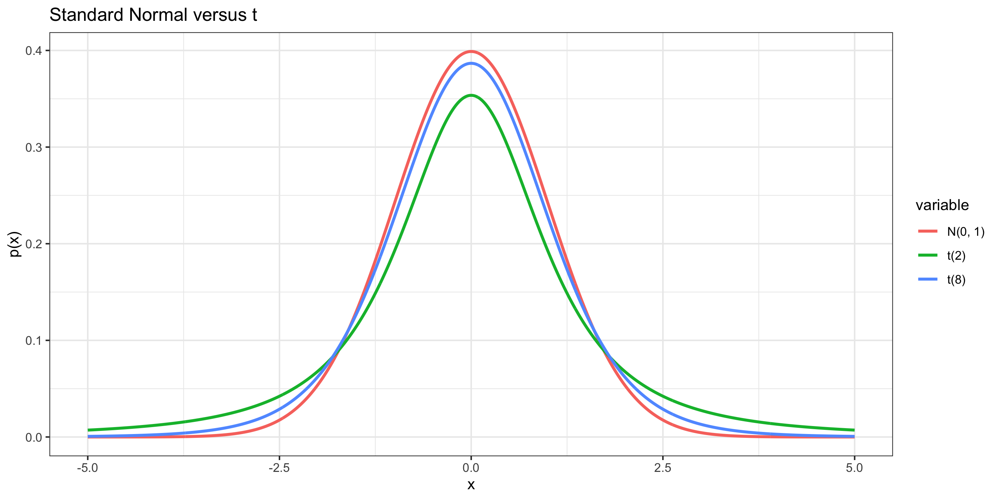
Random Sample Means (n=10)
Suppose we repeatedly take samples of 10 days from each planet, and compute the average temperature \(\bar{x}\) for each sample:
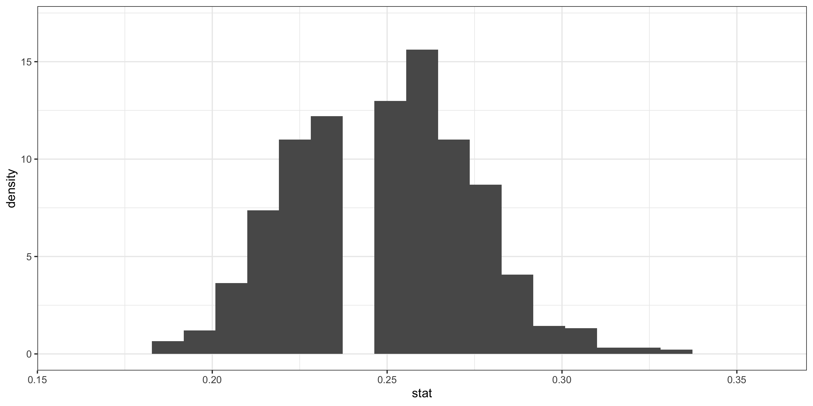
What does the distribution of sample means look like?
Random Sample Means (n=50)
Suppose we repeatedly take samples of 50 days from each planet, and compute the average temperature \(\bar{x}\) for each sample:
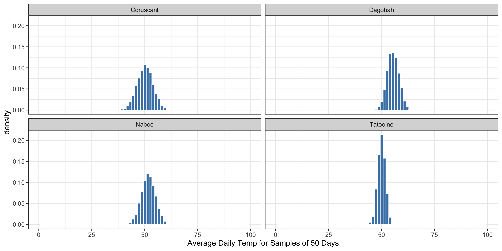
What does the distribution of sample means look like?
Sampling Distributions are Approximately Normal
In the previous example, the sampling distribution for each planet appeared approximately Normal, regardless of the shape of the population distribution.
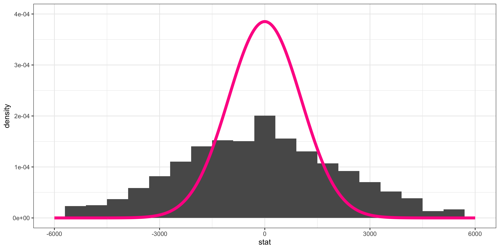
We’ve seen this before! As \(n\) increases,
- Sampling distributions become more Normal
- Variance decreases
- Mean doesn’t change; it is the parameter.
The Central Limit Theorem (CLT)
Theorem: Central Limit Theorem
Suppose a simple random sample of size \(n\) is drawn from a population with finite mean \(\mu\) and finite standard deviation \(\sigma\). Let \(\bar{x}\) be the sample mean. When \(n\) is large, then approximately \[\bar{x} \sim Normal\left(\mu, \frac{\sigma}{\sqrt{n}}\right)\]
A proof of the CLT requires more advanced techniques in probability (See Math 391).
- We have gained intuition already for the CLT by examining sampling distributions!
- We will use the CLT to conduct hypothesis tests/confidence intervals without simulation.
The CLT is a BIG deal!
- When conducting inference, our statistic is often a sample mean
- A proportion is a sample mean of sorts too!
- For nearly any population distribution, the sample mean is approximately Normal
- The sampling distribution is thus Normal too!
- We have a formula to calculate the mean and variance of a sample mean.
- We can quickly figure out what the sampling distribution looks like!
Next week
- We’ll use the CLT to help us do statistical inference